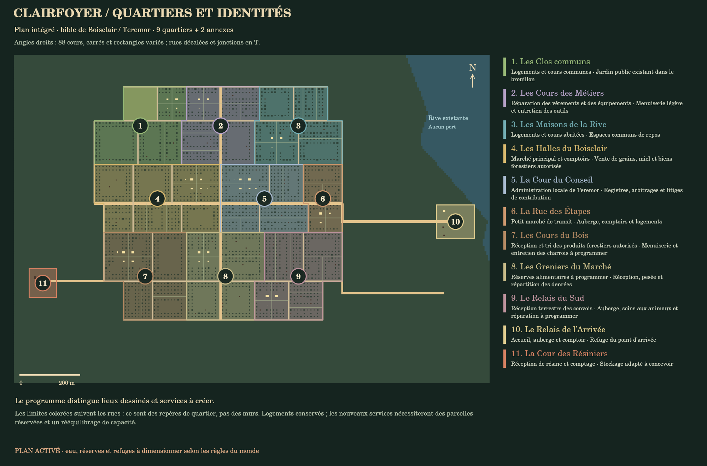
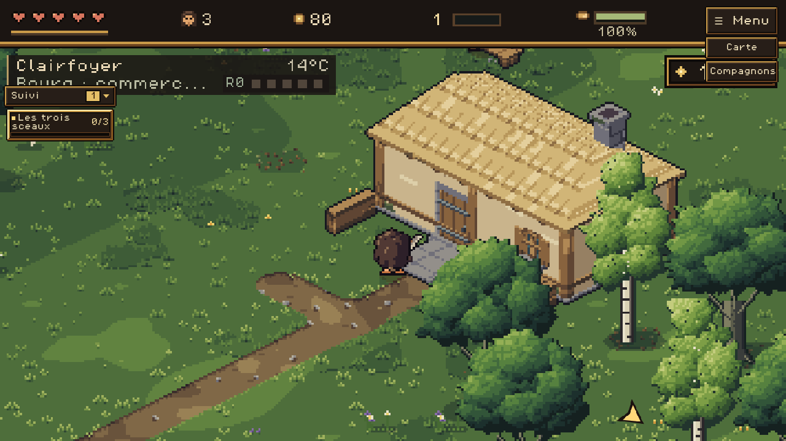
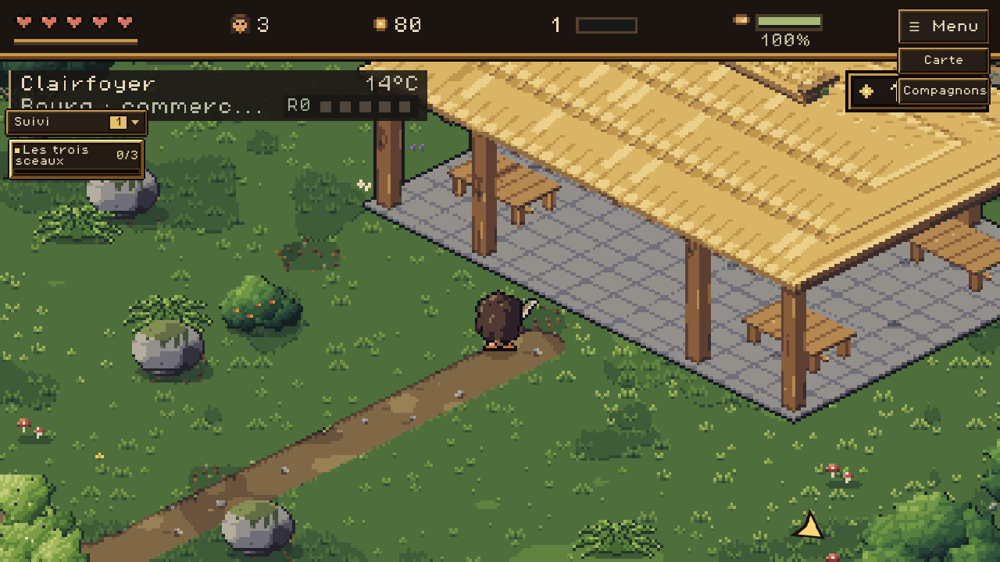
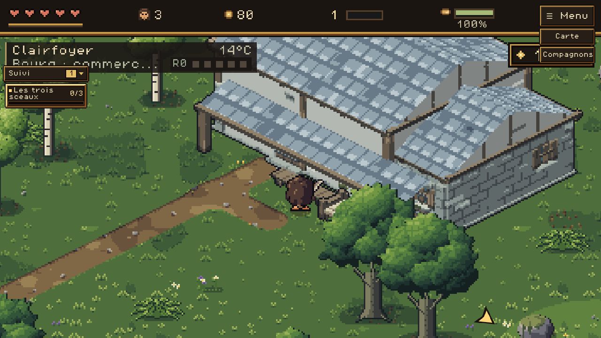
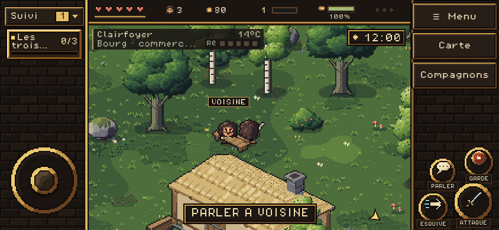

88 cours : 18 carrés, 37 rectangles horizontaux et 33 verticaux, avec des tailles différentes. Grands blocs inégaux, rues décalées et jonctions en T ; tous les angles restent droits et les maisons gardent leurs accès. Onze identités de quartier, 36 nouveaux modèles de bâtiments et d’infrastructures, 24 meubles fixes dans les cours. Les 49 définitions de postes sont livrées ; les métiers existants utilisent les nouveaux dessins.
Captures du jeu livré, avec le joueur actuel à quatre directions. Les 82 autres localités conservent leur implantation existante. Les besoins en eau, personnel et réserves restent soumis aux règles du monde.





Les fondations restent solides ; les bâtiments qui masquent le joueur s’effacent progressivement. Les captures masquent uniquement les notifications temporaires. Les mesures de temps de rendu du rapport correspondent à Chromium dans l’environnement de vérification, pas à une garantie sur un appareil mobile.